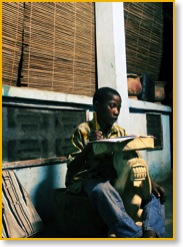
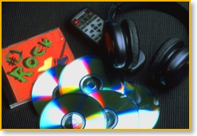
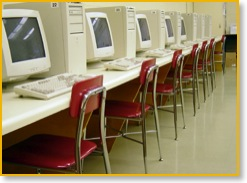

The Shuttleworth Foundation recognises the many
challenges facing dedicated educators and aspiring learners
in South Africa and in many other countries. At the same
time, we recognise the spectacular changes that technology has
brought about outside the classroom. Kusasa recognises
the opportunity to bring new educational technologies
into the classroom, to bridge the technological gap
between society and school.
In South Africa and in many other countries, mathematics and science education face a crisis. In South Africa, the origin of the problem is the chronic shortage of mathematics teachers. But the problem extends beyond supply and demand.

Just a few years ago, the only cultural distraction for learners was TV. But learners of today are drawn to TV, CD, DVD, SMS, MP3, PC, PSP, Wii, and more. So it is not surprising that even the best maths and science teachers struggle against these alphabet amusements. How can you attract and retain attention among learners whose minds would rather be elsewhere?
Yet, if we are honest, we must recognise that the problem of drawing learners into mathematics (and science) is not a recent phenomenon. To the extent that mathematics and science are formalised, dissociated and presented out of their natural context, as so often happens at school, learners find them tedious, boring and mentally painful. And, to the extent that we fail to develop mathematicians and scientists, we fail to develop some of the most valuable intellectual Atlases of tomorrow, who can carry the hopes of the nation on their shoulders.
For these reasons we need to find new ways to build analytical capacity in learners. These new techniques need to speak to the real interests of today's learners. Some artificial motivation quickly thrown in at the beginning of a lesson just won't do. What is needed are tools that enable learners to explore their personal interests, yet carry with them powerful mathematical and scientific ways of thinking, which become second nature for learners.
Kusasa offers just such computational and creative learning tools. Yet it also recognises the real constraints on teacher training and availability. Kusasa is not just free software, but a whole learning system which includes software, curriculum-aligned content, teacher training, and a framework to establish a new culture of learning.

With the phenomenal changes that have taken place
outside the classroom over the last 100 years, Kusasa
recognises that it is time to bring some of those
changes into the classroom in order to prepare
learners for the challenges of the 21st century. The
cost of computers continues to plummet even as their
power expands. Recognising the educational
opportunities that computers make possible, many
countries are embarking on substantial programmes to
ensure that learners have access to this technology.
For instance, the One Laptop Per Child (OLPC) project
is aiming to distribute "hundred dollar laptops" to
millions of children in developing countries around
the world. Kusasa aims to use ordinary, cheap computer
laboratories to make up for the lack of mathematical
teaching capacity.
Kusasa provides a curriculum for using dynamic modelling environments to explore concepts in different learning areas. It does not depend on mathematical knowledge or skills. And it does not depend on the availability of highly skilled teachers. It will help schools to develop a culture of teacher facilitation and peer mentoring. Kusasa offers a new learning culture focused on the development of analytical and creative thinking which can overcome the resistance of many learners to mathematics and science.
The falling cost and rising power of computers represents an opportunity. Today we can use computers and freely available software designed for learners to compensate for the shortage of maths and science teachers. But computers can also overcome the problem of trying to get learners to "love the maths they hate" by providing them with a new kind of maths they love.